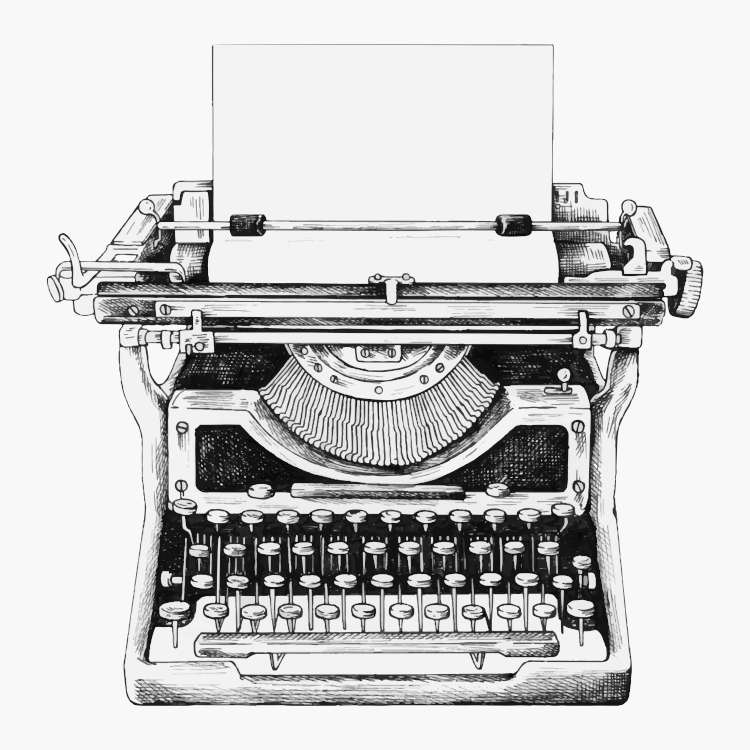

A evolução dos meios de comunicação e a internet
A máquina foi inventada em 1802 por Agostino Fantoni de Fivizzano, sobrinho do poeta italiano Labindo, para ajudar sua irmã cega, enquanto Turri apenas melhorou a máquina de Fantoni e inventou o papel carbono em 1806
A máquina de escrever é um equipamento mecânico, eletromecânico ou eletrônico equipado com teclas que, quando são acionadas, movimentam tipos, que imprimem letras, números e símbolos no papel, facilitando e dando maior agilidade ao processo de escrita. Ela foi construída para melhorar a legibilidade dos conteúdos e padronizar os documentos. Ao longo do tempo, o equipamento foi evoluindo.
O Crandall foi a primeira máquina de escrever para imprimir a partir de um único elemento ou “tipo luva”, bem antes de “bola de golfe” da IBM. Este tipo de manga é um cilindro, sobre o tamanho de seu dedo, que gira e se levanta uma ou duas posições antes de atingir o rolo, alcançando 84 caracteres com apenas 28 chaves.
Por essa perspectiva, a máquina de escrever teria sido criada por ele a fim de que sua amiga cega pudesse o enviar cartas. Apesar das diferentesersões, a máquina de escrever substituiu a escrita com canetas bico de pena, facilitando e agilizando o trabalho em empresas.
A máquina de escrever eletrônica teve suas vendas paralisadas, o principal motivo é o preço: enquanto um computador novo, com impressora, dificilmente sai por menos de 2 mil reais, uma máquina de escrever eletrônica está sendo vendida no Brasil por 525 reais.
Image by rawpixel.com on Freepik
O surgimento da Internet
Depois da Segunda Guerra, EUA e URSS começaram a ter seus desentendimentos, dando origem à Guerra Fria em 1949. Neste contexto, em que os dois blocos ideológicos e politicamente antagônicos exerciam enorme controle e influência no mundo, qualquer mecanismo, qualquer inovação, qualquer ferramenta nova poderia contribuir nessa disputa liderada pela União Soviética e pelos Estados Unidos: as duas superpotências compreendiam a eficácia e a necessidade absoluta dos meios de comunicação.
Nessa perspectiva, o governo dos Estados Unidos temia um ataque russo às bases militares. Um ataque poderia trazer a público informações sigilosas, tornando os EUA vulneráveis. Então foi idealizado um modelo de troca e compartilhamento de informações que permitisse a descentralização das mesmas. Assim, se o Pentágono fosse atingido, as informações armazenadas ali não estariam perdidas. Era preciso, portanto, criar uma rede, a ARPANET, criada pela DARPA, sigla para Defence Advanced Research Projects Agency.
O ataque inimigo nunca aconteceu, mas o que o Departamento de Defesa dos Estados Unidos não sabia era que dava início ao maior fenômeno midiático do século 20, único meio de comunicação que em apenas 4 anos conseguiria atingir cerca de 50 milhões de pessoas.
O começo de tudo
A ARPANET funcionava através de um sistema conhecido como chaveamento de pacotes, que é um sistema de transmissão de dados em rede de computadores no qual as informações são divididas em pequenos pacotes, que por sua vez contém:
- trecho de dados
- o endereço do destinatário
- informações que permitiam a remontagem da mensagem original.
Em 29 de Outubro de 1969 ocorreu a transmissão do que pode ser considerado o primeiro E-mail da história. O texto desse primeiro e-mail seria "LOGIN", conforme desejava o Professor Leonard Kleinrock da Universidade da Califórnia em Los Angeles (UCLA), mas o computador no Stanford Research Institute, que recebia a mensagem, parou de funcionar após receber a letra “O”.
Já na década de 1970, a tensão entre URSS e EUA diminui. As duas potências entram definitivamente naquilo em que a história se encarregou de chamar de Coexistência Pacífica. Não havendo mais a iminência de um ataque imediato, o governo dos EUA permitiu que pesquisadores que desenvolvessem, nas suas respectivas universidades, estudos na área de defesa pudessem também entrar na ARPANET.
Com isso, a ARPANET começou a ter dificuldades em administrar todo este sistema, devido ao grande e crescente número de localidades universitárias contidas nela. Dividiu-se então este sistema em dois grupos, a MILNET, que possuía as localidades militares e a nova ARPANET, que possuía as localidades não militares.
O desenvolvimento da rede, nesse ambiente mais livre, pôde então acontecer. Não só os pesquisadores como também os alunos e os amigos dos alunos, tiveram acesso aos estudos já empreendidos e somaram esforços para aperfeiçoá-los. Já na década de 70, depois da abertura da rede para pesquisadores Além desses backbones, existem os criados por empresas particulares.
A elas são conectadas redes menores, de forma mais ou menos anárquica. É basicamente isto que consiste a Internet, que não tem um dono específico. Com a entrada de muitos pontos na rede e com métodos de comunicação diferentes entre eles, alguma atitude tinha que ser tomada, já que o antigo protocolo NCP já não estava mais aguentando. Robert Kahn da DARPA e ARPANET recrutaram Vint Cerf da Universidade de Stanford para trabalhar com ele nesse problema.
Em 1973, eles logo trabalharam com uma reformulação fundamental, onde as diferenças entre os protocolos de rede eram escondidas pelo uso de um protocolo inter-redes comum, e, ao invés da rede ser a responsável pela confiabilidade, como no ARPANET, os hospedeiros ficaram como responsáveis.
A especificação do protocolo resultante contém o primeiro uso atestado do termo internet, como abreviação de internetworking; então a palavra começou como um adjetivo, ao invés do nome que é hoje. Com o papel da rede reduzida ao mínimo, ficou possível a junção de praticamente todas as redes, não importando suas características, assim, resolvendo o problema inicial de Kahn.
O DARPA concordou em financiar o projeto de desenvolvimento do software, e depois de alguns anos de trabalho, a primeira demonstração de algo sobre gateway entre a rede de Packet Radio na Baía de SF área e a ARPANET foi conduzida.
A HTML
Decorrentes das primeiras especificações do TCP em 1974, TCP/IP emergiu em meados do final de 1978, em forma quase definitiva. Em 1º de janeiro de 1983, data conhecida como Flag Day, o protocolo TCP/IP se tornou o único protocolo aprovado pela ARPANET, substituindo o antigo protocolo NCP. O cientista Tim Berners-Lee, do CERN, criou a World Wide Web, a linguagem HTML e o protocolo HTTP em 1992.
Essa linguagem simples, mas eficiente, era usada para a criação dos sites com o conceito de hipertexto (documentos ligados entre si). A empresa norte-americana Netscape criou o protocolo HTTPS (HyperText Transfer Protocol Secure), possibilitando o envio de dados criptografados para transações comercias pela internet.
Hoje, a imprensa deixa o ambiente físico, como papel, para cada vez mais tornar-se difundida mundialmente por meio das redes.
CRIADO PELO PROFESSOR GUSTAVO GUANABARA E DISPONÍVEL NO ENDEREÇO DO SEU REPOSITÓRIO PÚBLICO DO GitHub